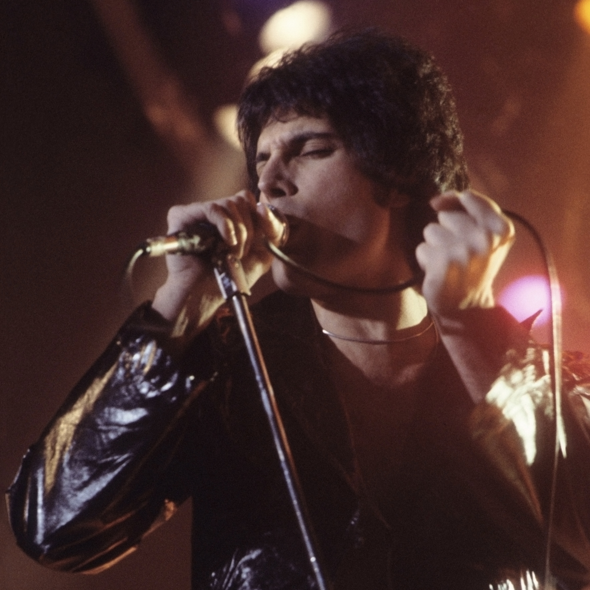

Freddie Mercury
Freddie Mercury was not just a singer; he was a force of nature. As the frontman of Queen, he blended the grit of rock and roll with the grandeur of opera, creating a stage persona that was as intimate as it was colossal. From his beginnings in Zanzibar to his final recordings in Montreux, Mercury’s life was a masterclass in self-invention and artistic defiance.
From Farrokh to Freddie: The Making of an Icon
Born Farrokh Bulsara in 1946 in Zanzibar (now Tanzania), Freddie spent much of his childhood in India at St. Peter’s boarding school. It was here that he began piano lessons and formed his first band, The Hectics. In 1964, his family fled to England to escape the Zanzibar Revolution.
In London, while studying graphic design at Ealing Art College, Farrokh transformed himself. He officially changed his name to Freddie Mercury, adopting the surname of the messenger of the gods. This was more than a rebranding; it was the birth of a character who refused to be constrained by his background, his shy personality, or the social norms of the time.
The Science of a Miracle Voice
While Mercury famously claimed he never had formal vocal training, science has since tried to decode the magic of his voice. A 2016 study published in Logopedics Phoniatrics Vocology highlighted several "superhuman" traits:
The Baritone in Tenor’s Clothing: Although he primarily sang as a tenor, his speaking voice suggested he was a natural baritone, a range he often used in his lower, darker registers.
Faster Vibrato: While a typical classical singer has a vibrato frequency between 5.4 Hz and 6.9 Hz, Mercury’s vibrato was measured at a staggering 7.04 Hz.
Subharmonics: Mercury could activate his "ventricular folds" (false vocal cords)—a technique usually reserved for Tuvan throat singers—to create his signature "rock growl" without damaging his voice.